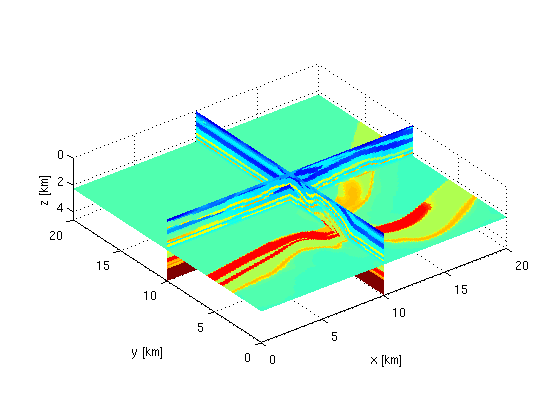
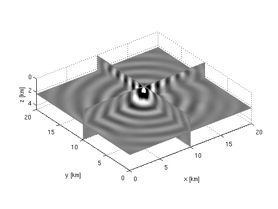
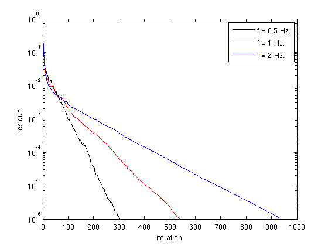
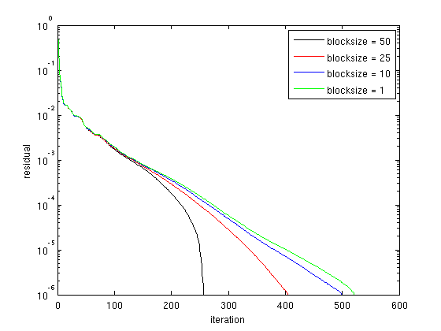
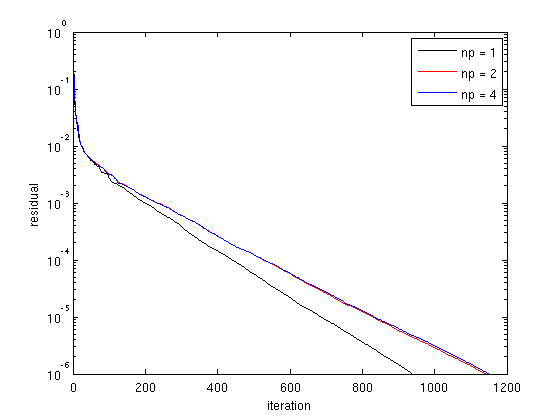
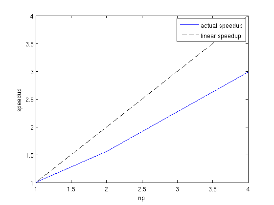
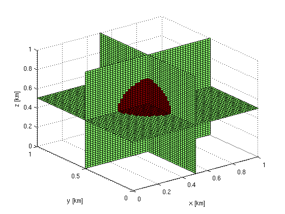
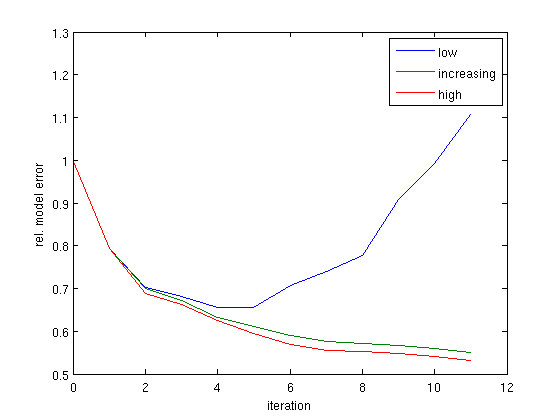
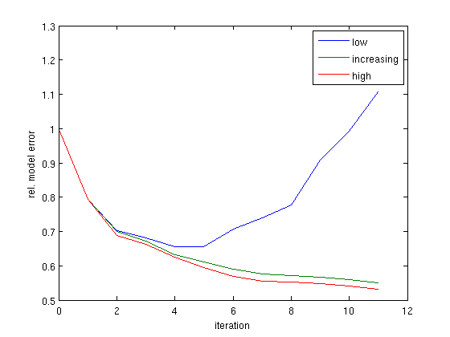

3D Frequency-domain FWI with batching: results
Contents
CARP-CG
Here we present some results of the Helmholtz solver on the overthrust model. The model and a wavefield for 2 Hz are shown below.
 We compute the wavefield for various frequencies with a fixed number of gridpoints per wavelength. The convergence histories are shown below
We compute the wavefield for 1 Hz for 50 point-sources distributed randomly across the surface using various block-sizes in block-CG. The convergence histories are shown below
We compute the wavefield for 2 Hz using 1,2 or 4 processors. The convergence histories and speedup are plotted below
Warning: Ignoring extra legend entries. 
FWI
We present some examples on a simple 3D model depicted below
The results when using approximate PDE solves to compute the gradients are given below. We consider three scenario's
- fixed low accuracy \(\epsilon = 10^{-3}\)
- gradually increasing accuracy \(\epsilon_k = (0.8)^k \cdot 10^{-3}\)
- fixed high accuracy \(\epsilon = 10^{-6}\)
 
